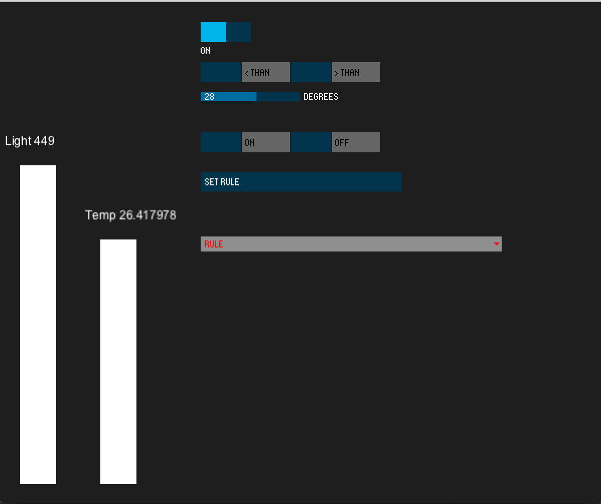

14- Interface and application programming
Intro
The assignment for this week was to create a GUI that is able to receive data and send commands to a board we designed. For this assignment I decided to connect to the Fabkit the input and output boards I made for the previous assignments and give them and interface using Processing and serial communication.
Choosing the right tool
For this assignment I decided to use Processing as, in the past I used it to make some little projects of visualization or modifying examples but I never made a structured graphical gui. I have previous experience even with other languages but I find Processing very useful for making fast prototypes. Moreover it accepts also Java code and there are interesting libraries (like OpenCV) to do a lot of cool things and it is multi platform.
Designing the system
I wanted to made a system able to turn on and off my air conditioning system according to the temperature. To do this I used the input board that has a:
- LM35 analog temperature sensor
- Light dependant resistor (10k)
and the output board that has a:
The system should allow the used to set a simple rule: if the temperature gety major or minor a certain value that turn on or off the air conditioning. So the user should set:
- major or minor
- reference temperature
- if the air conditioner shold be turned on or off
Once the user set the rule the system proceeds as follow:
Implementing the system
To implement the system I split my work in different parts:
- I have to program the Fabkit to read sensor values and send it to Processing and make processing visualize the values on the GUI.
- I have to program Processing to let the user sets some parameters that have to be examinated to send a proper command to the Fabkit
- Make the Fabkit send a command to the air conditioner. To do this I have a subtask related to find the right IR code for the air conditioner
You can find an explanation of IR communication on the Output assignment page
Sending the sensor values to Processing
To send the sensor value to Processing from the Fabkit I used serial communication. As I want to send two values I separated the values with a / so it's easy to parse it from Processing. Even if the light is not used now i want to send it for future implementation. I used the Arduino IDE to make the code:
The delay at the end is important to avoid problems with the serial buffer
The I implemented the code on Processing. The choice was to make the application event driven (reacting to serial messages from the Fabkit) or reading the values in the loop. I chose the sencond strategy as the data flow is continous and would result disturbing.
The code for reading from the serial is very easy in Processing. You have to use the serial library, open the right port with the right baudrate and then read the buffer. On my pc the right port is 3 so if you use my code you have to change it (maybe).
The interesting part is the split command that splits the message when it finds the / so I can have two separate values for light and temperature. I’ve seen that using float has a bad effect on the ATMega performances so I decided to use Processing to operate the calculation to obtain the temperature multiplying the red value for a constant.
Creating the GUI
I started visualizing the sensor values using two rectangles that dynamically changes the height.
Reading sensor values from Massimiliano Dibitonto on Vimeo.
But to have a right visualization I used the map command to make the values adapt proportionally to the dimensions of the screen.
To create the GUI I used the ControlP5 library that has some nice controls.I started from the examples to make the toggles and a slider to set up the rule. There is a switch to turn on and off the rule execution.

When you click on the toggles they change the colour. Pressing the "set rule" button you confirm the rule that appears in a list.
Then when a command is fired you see a label saying on or off depending if you turned on or off the air conditioner.
If you try to set the rule without setting the parameters you recive an alert message:
Sending messages to the Fabkit
To turn on and off the air conditioner Processing sends to the Fabkit an integer through serial communication. According to the number received the Fabkit choose the command to be sent to the air conditioner.
The result
Interface programming from Massimiliano Dibitonto on Vimeo.
 Attribution, non-commercial, share alike.
Attribution, non-commercial, share alike.